gallery
Made with Agate.
Every example is a real note in the demo vault: a plain Vega or Vega-Lite spec over ordinary notes. Each shows the Agate feature it leans on and links to its spec. Click a picture to see it larger.

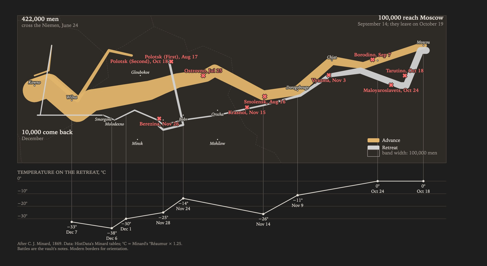
maps · historyMinard's 1812, from battle notes
The army's path and width come from Minard's own figures; every battle is a note in a base, so adding one drops a mark on the map. Hover a battle for the note's date, outcome and phase, click it to open the note. The temperature on the retreat sits underneath, on the same scale.
feature: layered maps · tooltips from note properties · open on click · campaign-1812.vg.json

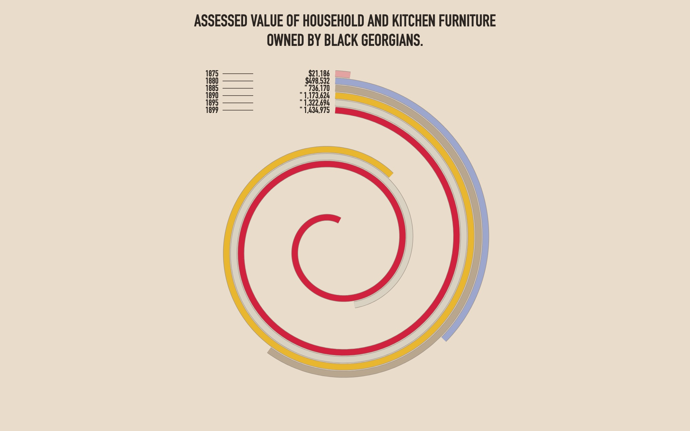
static · no baseDu Bois, 1900
A static chart in a note, with no base behind it: the six figures sit in the spec, and a code block draws them. After W. E. B. Du Bois's portrait of the furniture owned by Black Georgians, 1875–1899, made for the 1900 Paris Exposition (the original, Library of Congress). As in his plate, it is a bar chart wrapped into a spiral: each year's band starts at the top beside its label and runs clockwise, curling inward as it wraps, its length proportional to the value.
feature: static charts in notes · any Vega spec · dubois-furniture.vg.json

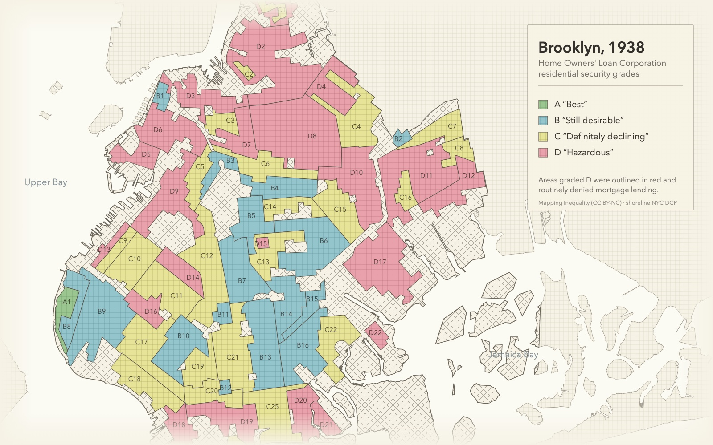
maps · historyRedlining in Brooklyn, 1938
The HOLC's "residential security" grades, A (best) to D (hazardous): the D zones were denied mortgage backing, the origin of "redlining". Drawn quietly after the original sheet, where the grades were printed over Hagstrom's street map: muted colours over a fine street grid, ungraded land in a light crosshatch, the HOLC's own grade words in quotes, in New York's Long Island state plane projection. Today's shoreline sits underneath for orientation. Both GeoJSON files live in the vault as ordinary files. Grades: Mapping Inequality, University of Richmond (CC-BY-NC); shoreline: NYC Department of City Planning.
feature: vault files as data · SVG textures · redlining-brooklyn.vl.json

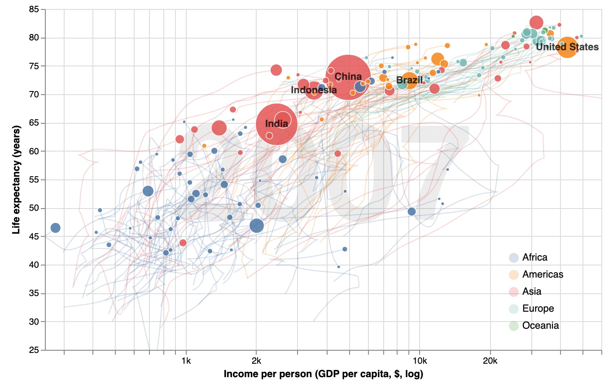
per-note data · animationThe wealth and health of nations
Hans Rosling's chart, 1952–2007: income per person against life expectancy, a bubble per country sized by population, with a year slider and faint trails behind. Every country is a note with its continent as a property and its own CSV, so filtering the base to one continent redraws the world. Data: Gapminder (CC BY 4.0).
feature: per-note data · bound sliders · open on click · gapminder.vl.json

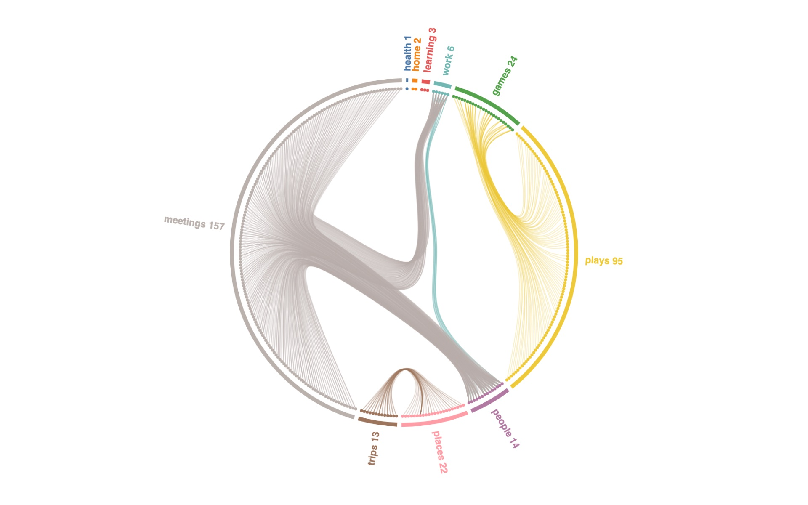
networks · pure vegaHow the vault links, bundled
Every note that links or is linked sits on the circle, grouped by folder; each link curves through the folder tree, so meetings bundle into people and projects, plays into games, trips into places. Hover a note to light up its links. Vega-Lite has no tree layout or bundled lines; full Vega does, and Agate hands it both the folder tree and the links.
feature: the folder tree · links as edges · Vega-only layouts · vault-links.vg.json

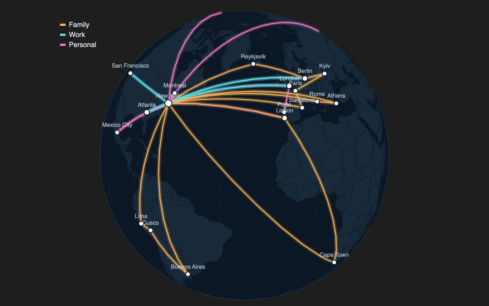
mapsTrips on a globe you can spin
Trip notes list their stops; place notes carry coordinates. Every leg is a great circle on an orthographic globe you drag to rotate.
feature: map projections · links between notes · travel-globe.vg.json

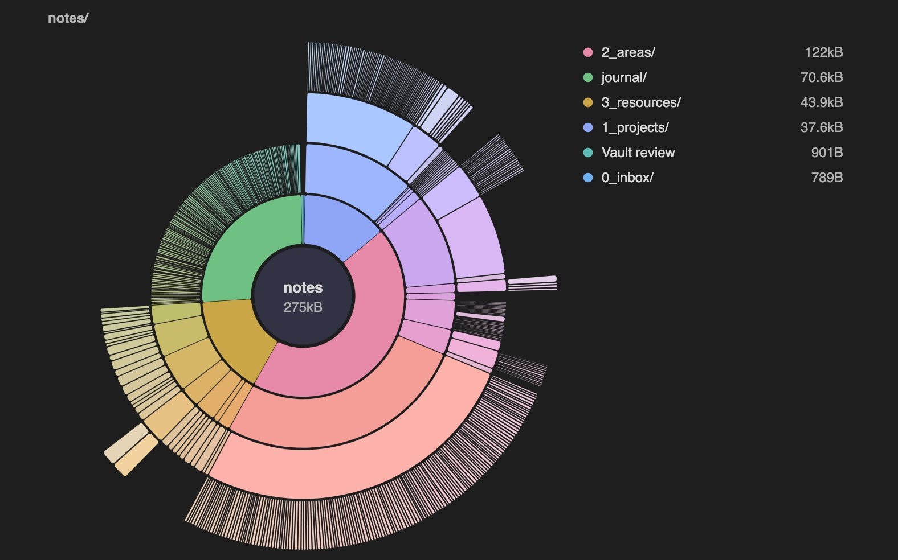
hierarchiesThe vault itself
A DaisyDisk-style sunburst of folders and files, arc length by bytes. Click a ring to zoom into a folder, the centre to go back up, a file to open it.
feature: the folder tree · partition layout · open on click · vault-sunburst.vg.json
your look
Any look, including your own.
Pick a theme for the whole vault in settings, or per chart in the view's Theme option.
Built in, and alive
obsidianreads your Obsidian fonts and colours, and redraws the moment you switch light or dark.instrumentis the same, redrawn as a monochrome readout for dense time series.
Every stock Vega theme
excel fivethirtyeight ggplot2 googlecharts latimes powerbi quartz urbaninstitute vox dark carbonwhite carbong10 carbong90 carbong100
Or make your own
- Theme file: a Vega config (JSON or YAML) in your vault, merged over the chosen theme. The Du Bois look at the bottom right is one file: du-bois.json.
- Config overrides in settings, for a font or a colour or two.
- Copy theme prompt: an assistant drafts the file from your current Obsidian theme and a description of the look you want.
- Plugins can register named themes through Agate's API.

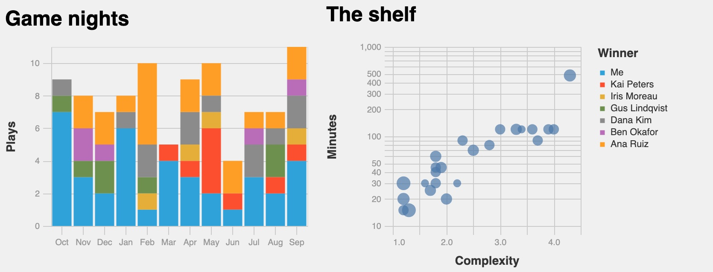
stock · fivethirtyeight
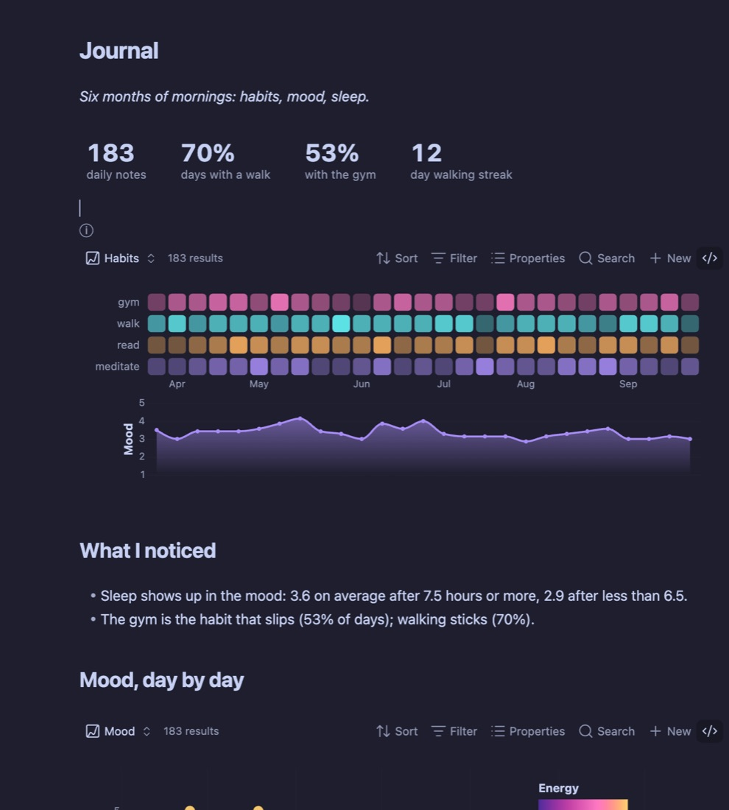
obsidian
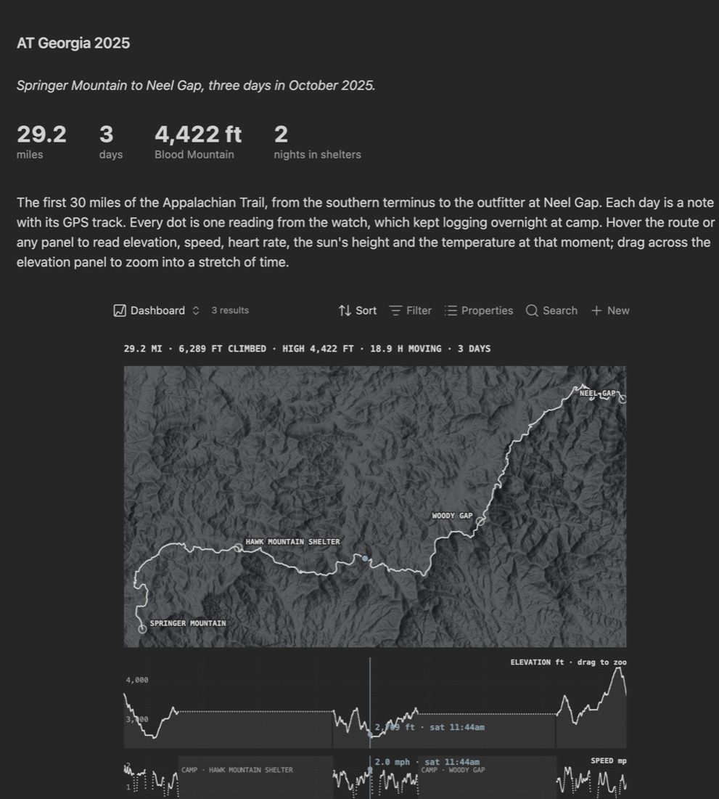
instrument
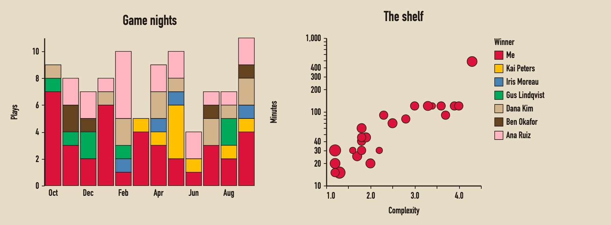
custom · du boisbeyond pure vega
What Agate adds to the spec.
A plain Vega spec only sees the data you give it. Agate also hands it the web, each note's own files, the base's totals and real map tiles. Each tile links to the recipe in the guide.
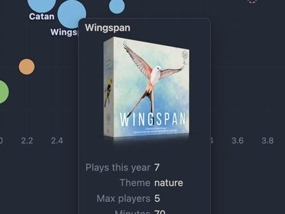
Fetched from the web
A note can carry a URL: a cover for the tooltip, or a dataset. Remote data loads only once you allow it.
How to →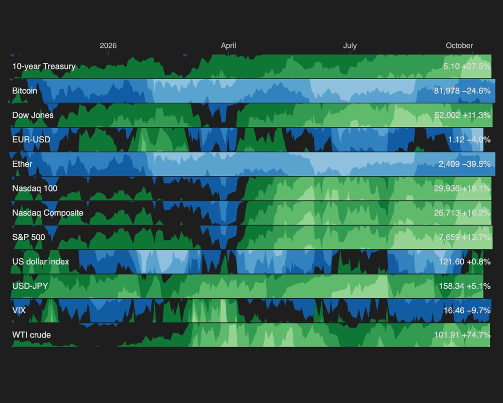
Each note's own data
Point each note at a CSV or a URL; Agate loads one dataset per note. Here, twelve market notes, each with its own FRED series.
How to →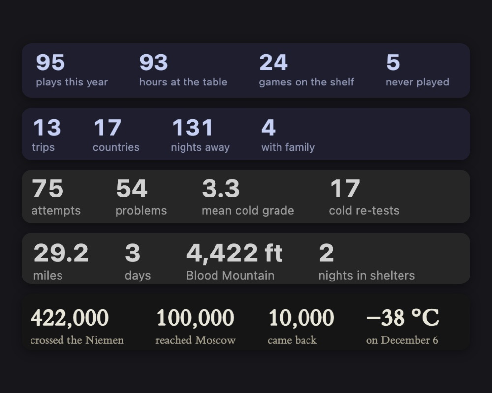
Aggregate counters
Counts, sums and averages over the base as big headline numbers that update with every note. Vega does the maths.
How to →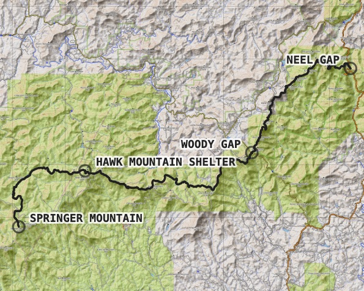
Set the basemap
Real map tiles under your routes: topo, hillshade or satellite, keyless out of the box. Keyed providers read their token from an environment variable.
How to →More in the repo: a sankey across properties, an arc diagram of links over time, a linked dashboard, and a beeswarm.
Make one over your own notes.
Pick a recipe or prompt an assistant — no chart library to learn.